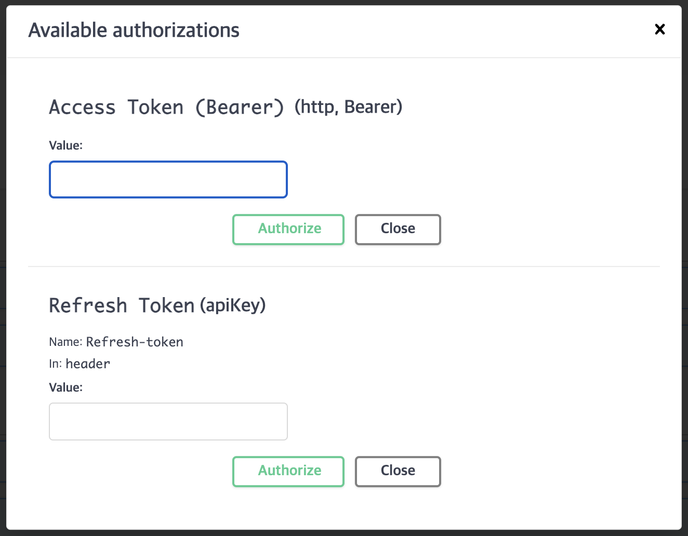
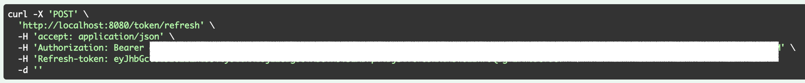

Swagger - Springdoc access token, refresh token 설정
토이 프로젝트 중 swagger에 access token와 refresh token을 담을 일이 생겼는데, springfox가 아니라 springdoc을 사용하려고 보니 생각보다 헷갈렸다.
(글을 임시로 작성해보고 동적으로 보여주고 싶습니다. 일단 쉽지 않음을 느꼈어요. 그게 언제가 될진 모르겠어요.)
의존성 추가
springdoc-openapi-1.6.4 사용
SwaggerConfig 생성
OpenAPI를 설정해준다.
@Bean
public OpenAPI openAPI() {
(info 설정 생략)
String key = "Access Token (Bearer)";
String refreshKey = "Refresh Token";
SecurityRequirement securityRequirement = new SecurityRequirement()
.addList(key)
.addList(refreshKey);
SecurityScheme accessTokenSecurityScheme = new SecurityScheme()
.type(SecurityScheme.Type.HTTP)
.scheme(AuthorizationType.BEARER.getCode())
.bearerFormat("JWT")
.in(SecurityScheme.In.HEADER)
.name(HttpHeaders.AUTHORIZATION);
SecurityScheme refreshTokenSecurityScheme = new SecurityScheme()
.type(SecurityScheme.Type.APIKEY)
.in(SecurityScheme.In.HEADER)
.name(AuthorizationType.REFRESH_TOKEN.getCode());
Components components = new Components()
.addSecuritySchemes(key, accessTokenSecurityScheme)
.addSecuritySchemes(refreshKey, refreshTokenSecurityScheme);
return new OpenAPI()
.info(info)
.addSecurityItem(securityRequirement)
.components(components);
}
참고할 점
- refresh token은 APIKEY 타입으로 설정한다: 실제로 token이 api의 key와 같이 사용되고 있고, HEADER에 넣는다고 설정해주면 name과 함께 값이 설정되는 것 같다.
- AuthorizationType은 자체 설정해준 enum이다.
위와 같이 설정하면,

이렇게 설정되는 것을 볼 수 있다.

실제로 값을 담아주고도 있다.